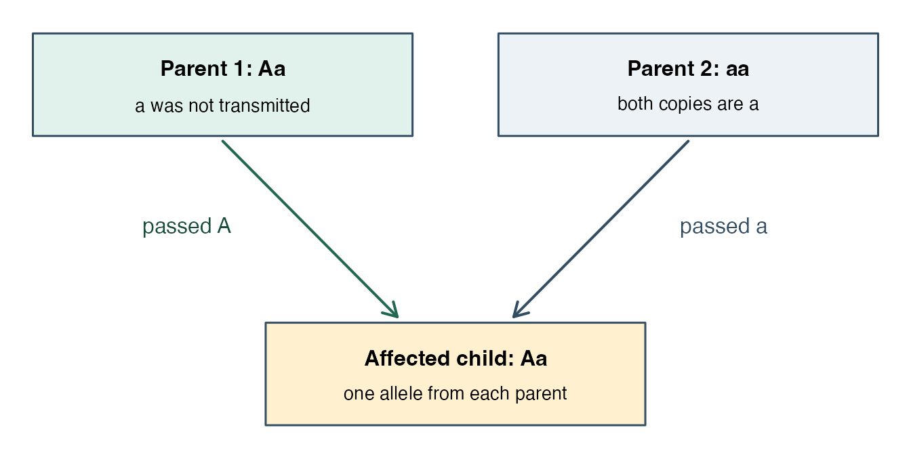
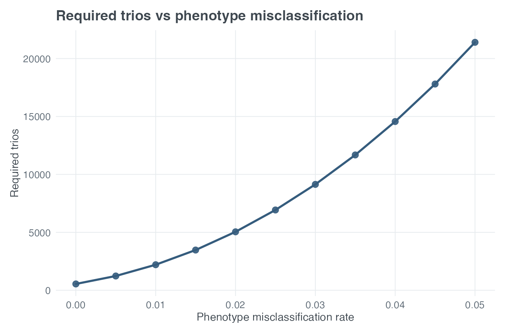
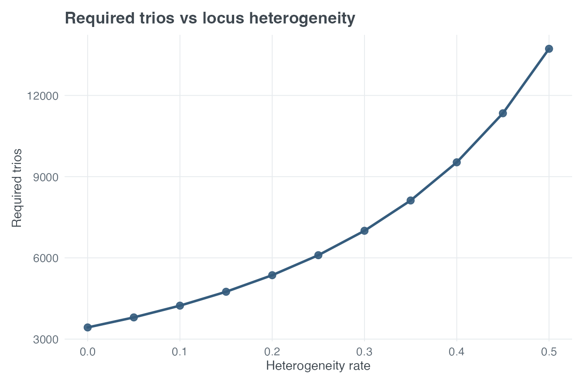

3. TDT Study Design
paweh package authors
Source:vignettes/paweh-03-tdt-study-design.Rmd
paweh-03-tdt-study-design.RmdWhy compare a child with their parents?
Suppose a clinic can recruit 600 children with a childhood disease and both parents of each child. A nearby DNA marker has two versions, or alleles, called A and a. Do affected children inherit A more often than expected from parents who could pass on either allele? How many families would give the study a good chance of detecting such a difference?
In an unrelated case-control study, cases and controls might come from populations where A has different frequencies. If disease prevalence also differs between those populations, a difference in allele frequencies can look like a disease association. This is population stratification. The transmission disequilibrium test (TDT; Spielman, McGinnis, and Ewens, 1993) asks which allele an affected child received within the same family. Both possible alleles come from the same parent, so ancestry differences between unrelated groups do not supply the comparison. A mistaken disease diagnosis or an incorrect genotype can still change the result.
What does one family contribute?
A complete trio consists of two biological parents and their affected child, all genotyped at the marker. At an autosomal marker a child inherits one allele from each parent. A parent with genotype Aa is heterozygous: either A or a can be passed on. A parent with genotype aa (or AA) is homozygous: both copies are alike. The figure follows one of the possible outcomes for an Aa parent and an aa parent.

One complete trio. Arrows trace the inherited alleles; the alternative allele is identified inside each parent’s box.
Count transmissions with respect to one prespecified allele, here A. Parent 1 adds one transmission of A; the untransmitted a tells us what the child could have received instead. Had this child received a from Parent 1, that parent would add one non-transmission of A. Parent 2 adds neither count: there was no choice between A and a. A trio can thus contribute zero, one, or two informative parental transmissions. Plan recruitment in complete families: 600 independent trios need 1,800 people, but 1,800 individuals alone do not guarantee even one complete trio.
From transmissions to power
Under Mendelian segregation each heterozygous parent passes on either allele with probability one half. Under the TDT null (no linkage or no association), and with accurate calls and ascertainment, selecting affected children should not systematically favor A. The observed TDT compares how often A was transmitted with how often it was not. A sustained imbalance provides evidence against that null; it does not establish that A itself causes disease.
Before recruiting anyone, we have no observed counts. Instead, a design model predicts ET, the expected number of informative transmissions of A, and ENT, the expected number of informative non-transmissions of A. These can be fractional because they are averages over hypothetical repetitions of the study. Deng and Chen’s affected-trio calculation uses this contrast to obtain the noncentrality parameter (NCP):
The numerator is the squared excess of one outcome over the other; either direction counts as evidence. The denominator is the total expected number of informative transmissions. At a given total, a larger imbalance gives a larger NCP. At fixed transmission proportions, doubling the number of independent families doubles the NCP. Power is the probability that the statistic exceeds the chosen null cutoff when the modeled association is real. The calculation uses a large-sample chi-square approximation with one degree of freedom: central under the usual null and noncentral under the alternative. The NCP is a design quantity, not a statistic observed in a particular family study.
Would 600 trios suffice?
Start with a two-allele disease locus and a marker that tags it. Relative risk compares disease risk at one genotype with risk in people who carry zero copies of the modeled disease allele. The inputs below specify an illustrative study; the disease definition and frequencies would need independent justification in a real design.
| Input | Value | Meaning in this design |
|---|---|---|
N |
600 | Complete affected-child trios available for a power calculation. |
pd |
0.30 | Population frequency of the disease allele; the modeled marker allele has the same frequency. |
prev |
0.05 | Fraction of the source population truly affected, before classification error. |
R1 |
1.5 | One-copy genotype has 1.5 times the zero-copy disease risk. |
R2 |
2.25 | Two-copy genotype has 2.25 times the zero-copy risk. |
alpha |
0.05 | Nominal probability of rejecting a true null; sets the test cutoff. |
delta_prime |
1 | Maximum positive linkage disequilibrium (LD) at these allele frequencies. |
misclass_rate |
0.01 | Probability a truly unaffected child is classified as affected, in the phenotype scenario. |
heter_rate |
0.10 | Fraction of families unlinked to the modeled locus, in a separate scenario. |
target_power |
0.80 | Desired probability of detecting the modeled association when solving for sample size. |
Here each additional copy multiplies disease risk by 1.5, so
R2 = R1^2. Prevalence and genotype frequencies anchor those
relative risks to absolute disease probabilities (penetrances). The
model assumes random pairing of parental haplotypes (the alleles carried
together on a chromosome) and Hardy-Weinberg genotype proportions. LD
measures whether the marker and disease alleles occur together more
often than their marginal frequencies predict. With equal frequencies at
the two loci the implementation sets
.
The input delta_prime is this normalized positive
,
ranging from zero to one. A value of one means maximal positive tagging
for these frequencies; it is not a parent’s probability of passing on A.
The canonical linked-family calculation assumes no recombination between
the two loci. It does not model negative LD or independently chosen
marker and disease allele frequencies.
Use tdt_power() when the family count is fixed. Reverse
the question with tdt_mssn(): find the minimum sample size
needed (MSSN) for 80% power. These calls return a baseline and two
separate sensitivity scenarios.
basic_tdt_power <- tdt_power(
N = 600, input_mode = "model_based",
pd = 0.30, prev = 0.05, R1 = 1.5, R2 = 2.25,
alpha = 0.05, delta_prime = 1,
misclass_rate = 0.01, heter_rate = 0.10,
verbose = FALSE
)
basic_tdt_mssn <- tdt_mssn(
target_power = 0.80, input_mode = "model_based",
pd = 0.30, prev = 0.05, R1 = 1.5, R2 = 2.25,
alpha = 0.05, delta_prime = 1,
misclass_rate = 0.01, heter_rate = 0.10,
verbose = FALSE
)| Scenario | Power | MSSN | Trios |
|---|---|---|---|
| Baseline | 0.9967 | 214.9086 | 215 |
| Phenotype misclassification | 0.9751 | 306.3362 | 307 |
| Locus heterogeneity | 0.9879 | 265.3192 | 266 |
At 600 trios the baseline has about 99.67% power. Changing only the disease labels lowers power to 97.51%; changing only the mix of families gives 98.79%. Reading down the last column instead, the three plans need 215, 307, and 266 whole trios, respectively. Round sample sizes up, and budget separately for incomplete families. Neither modified row models both mechanisms together.
What if the expected counts are already known?
A genetic model supplies counts by predicting transmissions.
Alternatively, a pilot study or an external model may supply estimates
of ET and ENT for a known number of similar trios. The
model_free interface uses those counts; their relevance
still depends on the marker, case definition, and recruitment population
matching the proposed study.
The next calculation makes the units visible. Define gT
as the probability that a randomly selected parental contribution from
an affected-child trio is informative and transmits A;
gNT is the probability that it is informative
and does not transmit A. There are two parental
contributions per trio, so ET = 2 × number of trios × gT, and likewise
for ENT. Homozygous parents contribute to neither event. The two
probabilities need not add to one and are not case or control genotype
frequencies.
Here N_star = 500 is the design size used by the count
helper. Setting pi = 1 puts all families in the linked
group. This example retains the helpers’ default
theta1 = pd (0.30). In the published count equations this
position represents the recombination fraction in linked families (Chen
et al., 2009, Appendix), whereas the canonical model-based example above
uses zero. Set theta1 = 0 explicitly in all three helpers
to match that linkage assumption.
gT <- tdt_expected_transmission_probability(
pd = 0.30, prev = 0.05, R1 = 1.5, R2 = 2.25,
delta_prime = 1, verbose = FALSE
)
gNT <- tdt_expected_nontransmission_probability(
pd = 0.30, prev = 0.05, R1 = 1.5, R2 = 2.25,
delta_prime = 1, verbose = FALSE
)
expected_counts <- tdt_expected_transmission_counts(
N_star = 500,
pd = 0.30, prev = 0.05, R1 = 1.5, R2 = 2.25,
delta_prime = 1, pi = 1, verbose = FALSE
)| Quantity | Value |
|---|---|
| gT (per parent) | 0.2465 |
| gNT (per parent) | 0.2100 |
| ET (500 trios) | 246.5217 |
| ENT (500 trios) | 210.0000 |
Of 1,000 parental contributions, the model expects about 246.52 informative transmissions and 210.00 informative non-transmissions of A. The informative fraction is about 46%; among informative contributions, the predicted share transmitting A is about 54%. To compare power interfaces fairly, give both the very same counts and cutoff:
count_power <- tdt_power_from_expected_counts(
ET = expected_counts$ET_star,
ENT = expected_counts$ENT_star,
alpha = 0.05
)
canonical_model_free <- tdt_power(
N = 500, input_mode = "model_free",
ET = expected_counts$ET_star,
ENT = expected_counts$ENT_star,
misclass_rate = 0, heter_rate = 0,
verbose = FALSE
)
c(lower_level_power = count_power[["Power"]],
canonical_power = canonical_model_free$power$no_error)
#> lower_level_power canonical_power
#> 0.4011623 0.4011623Both calls give about 40.12% power (NCP 2.92): in repeated studies
under these assumptions, roughly four in ten would detect the imbalance.
This agreement checks the count-to-power calculation, not equivalence to
the earlier 600-family genetic model. For fixed-sample power,
N must equal the number of trios represented by the
absolute counts. For model-free MSSN, give that source
count as n_trios, so the function can infer rates per
parent before solving for a new family count. For a nonzero
modifier supply pd where possible; the implementation can
infer it only under its allele-frequency assumptions. Phenotype
misclassification also needs prev.
Misread genotypes: the model in Gordon, Finch, and Kim (2020)
A laboratory might report Aa as AA. That can hide an informative parent, create an apparent transmission, or produce a child whose called genotype is impossible given the parents’ calls. This is an error in the measured DNA genotype, a different problem from assigning the wrong disease diagnosis. Gordon, Finch, and Kim’s Heterogeneity in Statistical Genetics, Chapter 5, Designing Genetic Linkage and Association Studies that Maintain Desired Statistical Power in the Presence of Mixtures, treats this problem in §5.2.5 (pp. 277–284). Its one-parameter illustration adapts the error model of Douglas, Skol, and Boehnke (2002).
Code a genotype by its number of A copies: aa = 0, Aa = 1, AA = 2. An
adjacent error changes the called count by one copy. The
parameter genotype_misclassification_rate, denoted by
,
is the probability of each allowed change, with
.
Read across a row for one person’s possible laboratory calls:
| True copies | Called 0 | Called 1 | Called 2 |
|---|---|---|---|
| 0 (aa) | 0 | ||
| 1 (Aa) | |||
| 2 (AA) | 0 |
At , aa is called Aa 1% of the time and never AA. An Aa genotype has two possible wrong calls, each with probability 1%, so its total error probability is 2%. An AA genotype can be called Aa but never aa. The model applies these probabilities independently to both parents and the child.
Suppose both parents are called aa but the child is called Aa. No parental call can supply A, so this implementation excludes the called trio as Mendelian-inconsistent. Of 27 possible ordered call patterns, 15 are consistent. Removing the other patterns leaves less than unit probability; dividing each retained probability by their sum gives the distribution among families that pass the check. A consistent call can still be wrong. The function counts informative transmissions in this conditional distribution (§5.2.5.1, Eqs. 5.21–5.22).
Use the original 600-family design again, now changing only the genotype calls. The last column rounds up the required number of analyzable trios.
genotype_error_power <- tdt_power(
N = 600, input_mode = "model_based",
pd = 0.30, prev = 0.05, R1 = 1.5, R2 = 2.25,
alpha = 0.05, delta_prime = 1,
effect = "genotype_misclassification",
genotype_misclassification_rate = 0.01,
verbose = FALSE
)
genotype_error_mssn <- tdt_mssn(
target_power = 0.80, input_mode = "model_based",
pd = 0.30, prev = 0.05, R1 = 1.5, R2 = 2.25,
alpha = 0.05, delta_prime = 1,
effect = "genotype_misclassification",
genotype_misclassification_rate = 0.01,
verbose = FALSE
)
genotype_error_mssn_values <- c(
genotype_error_mssn$N$no_error,
genotype_error_mssn$N$genotype_misclassification
)| Scenario | Power | MSSN | Trios |
|---|---|---|---|
| Accurate calls | 0.9967 | 214.9086 | 215 |
| 1% per adjacent error | 0.9917 | 248.4951 | 249 |
At 600 analyzable trios, the expected counts move from 328.70 versus 219.13 to 324.95 versus 223.04. Their smaller contrast lowers the NCP from 21.91 to 18.95. Power falls from 99.67% to 99.17%, and 80% nominal power now requires 249 rather than 215 retained trios. About 98.63% of called families pass the consistency check in the error scenario. Recruiting exactly 249 families therefore does not guarantee 249 usable trios.
There is a second cost: at the nominal 5% cutoff, the modeled null
rejection rate at 600 trios is about 5.75%
(genotype_error_power$genotype_misclassification$actual_alpha).
Neither the power nor the sample-size result recalibrates that cutoff.
The book demonstrates null rejection-rate inflation; the 600-family
power comparison is a package illustration under a disease alternative,
not a published power benchmark or a correction for errors in observed
data.
Children classified as affected: Buyske et al. (2009)
Suppose screening captures all children with the disease, but also
labels 5% of unaffected children as affected. With 1% prevalence, among
10,000 children we would expect 100 true cases and about 495 false
positives (5% of 9,900). Only about one in six screen-positive children
would be a true case. This is why misclass_rate = 0.05 does
not mean that 5% of enrolled trios have a wrong
diagnosis: the rate is conditional on being unaffected. The added
families dilute the disease-related transmission contrast.
Buyske et al. studied this one-way error for a multiplicative risk model. Use their stringent cutoff of 0.00001, 80% power, equal allele frequencies of 0.50, maximal positive LD and a two-copy relative risk of 2.5. The table compares their published example (p. 291) with this calculation. Compute the package ratio from the unrounded estimates.
buyske <- tdt_mssn(
target_power = 0.80, alpha = 1e-5,
pd = 0.50, prev = 0.01,
R1 = sqrt(2.5), R2 = 2.5,
delta_prime = 1,
misclass_rate = 0.05, heter_rate = 0,
verbose = FALSE
)
buyske_ratio <- buyske$N$misclassification / buyske$N$no_error| Quantity | Published | paweh |
|---|---|---|
| Baseline trios | 691.00 | 546.00 |
| Trios with false positives | 27118.00 | 21401.00 |
| Final / baseline | 39.24 | 39.23 |
The package needs 546 versus 21,401 whole trios. A ratio of 39.23 means the final study needs about 39 times as many trios; the increase is , about 3,822.7%. The paper reports 691 versus 27,118, also about 39-fold. The relative result is reproduced, not the absolute sample sizes. Gordon, Finch, and Kim (§5.2.6, p. 285) identify a missing factor in the paper’s Eq. 5 and give corrected transmission equations. This does not, by itself, establish the reason for the difference in the no-error counts.
How much does case definition matter?
For a clinic that cannot know its false-positive rate exactly, vary that rate while holding prevalence and all other design assumptions fixed. Each point is a separate sample-size calculation.
plot_tdt_mssn(
x_var = "misclass_rate",
x_values = seq(0, 0.05, by = 0.005),
scenario = "misclassification",
input_mode = "model_based",
target_power = 0.80, alpha = 1e-5,
pd = 0.50, prev = 0.01,
R1 = sqrt(2.5), R2 = 2.5,
delta_prime = 1, heter_rate = 0,
title = "Required trios vs phenotype misclassification"
)
Required affected-child trios as phenotype misclassification increases under the Buyske model.
A steeper segment means that the same extra percentage point of false-positive classifications costs more families. Here tightening the case definition near the high-error end could save thousands of trios, if the other assumptions hold. The curve is a sensitivity analysis, not an uncertainty interval.
To explore prevalence as well, run the optional Plotly code in an interactive session. The height at each pair of coordinates is the required trio count. The widget is omitted from the installed article to keep its size small.
plot_tdt_surface3d(
metric = "mssn", scenario = "misclassification",
x = "prev", y = "misclass_rate",
x_values = c(0.005, 0.01, 0.02, 0.04),
y_values = seq(0, 0.05, length.out = 5),
target_power = 0.80, alpha = 1e-5,
pd = 0.50, R1 = sqrt(2.5), R2 = 2.5,
delta_prime = 1, heter_rate = 0
)Compare points at the same error rate: a smaller underlying pool of true cases makes the same false-positive rate more costly. The grid varies study assumptions; its heights are not probabilities that those assumptions hold.
One clinical diagnosis, several genetic causes: Chen et al. (2009)
Two children can meet the same disease definition for different
genetic reasons. If the marker tracks a disease locus in some families
but is unlinked to the cause in others, even perfectly diagnosed
families can dilute the signal. Chen et al. model a linked
fraction, called pi in the count helper, and an
unlinked fraction, heter_rate = 1 - pi in the
canonical functions. In the unlinked component the recombination
fraction is one half: the marker and disease locus segregate
independently, giving no systematic excess of transmissions over
non-transmissions. The mixture fraction describes
families, not the proportion of children misdiagnosed
or the population frequency of an allele.
Recreate the comparison in Chen et al., Figure 2: use 80% power at 0.00001, allele frequencies of 0.25, prevalence of 0.10 and a multiplicative model with two-copy relative risk 1.5. Only the unlinked fraction changes.
chen_no_heterogeneity <- tdt_mssn(
target_power = 0.80, alpha = 1e-5,
pd = 0.25, prev = 0.10,
R1 = sqrt(1.5), R2 = 1.5,
delta_prime = 1,
misclass_rate = 0, heter_rate = 0,
verbose = FALSE
)
chen_half_heterogeneous <- tdt_mssn(
target_power = 0.80, alpha = 1e-5,
pd = 0.25, prev = 0.10,
R1 = sqrt(1.5), R2 = 1.5,
delta_prime = 1,
misclass_rate = 0, heter_rate = 0.50,
verbose = FALSE
)| Unlinked | Published | MSSN | Trios |
|---|---|---|---|
| 0% | 3430 | 3430.70 | 3431 |
| 50% | 13721 | 13722.79 | 13723 |
Chen et al. report 3,430 trios for a homogeneous sample and 13,721 with half the families unlinked. The corresponding package requirements rounded up are 3,431 and 13,723 trios. Both give essentially a fourfold increase in the final study size. Half as many signal-carrying families per recruited trio means roughly half the transmission contrast; the contrast enters the NCP squared. The paper does not establish an exact reason for the small absolute differences.
To plan between those endpoints, vary only the unlinked fraction; each point below solves again for the same target power.
plot_tdt_mssn(
x_var = "heter_rate",
x_values = seq(0, 0.50, by = 0.05),
scenario = "heterogeneity",
input_mode = "model_based",
target_power = 0.80, alpha = 1e-5,
pd = 0.25, prev = 0.10,
R1 = sqrt(1.5), R2 = 1.5,
delta_prime = 1, misclass_rate = 0,
title = "Required trios vs locus heterogeneity"
)
Required affected-child trios as the heterogeneous or unlinked fraction increases under the Chen model.
Moving right means recruiting from a less genetically homogeneous population while keeping the disease definition unchanged. The rising slope shows that each additional five percentage points of unlinked families costs more trios near 50% than near zero. A pilot estimate of the linked fraction can help decide which part of this curve to budget for.
Choosing a TDT design
Begin with the constraint your study actually faces, then choose the assumptions supported by your evidence.
| Question or evidence | Choice |
|---|---|
| We can obtain a fixed number of complete trios. | Use tdt_power(N = ...); read power at that
number of families. |
| We need a specified probability of detection. | Use tdt_mssn(target_power = ...); round up
and allow for losses separately. |
| We know prevalence, allele frequency and plausible genotype risks. | Use input_mode = "model_based" and state
the assumed positive LD. |
| An earlier population supplies expected informative counts. | Use "model_free" with ET, ENT and the
number of trios that produced them. |
| Screening may admit unaffected children. | Vary misclass_rate; specify the true
prevalence, even with count inputs. |
| Correctly diagnosed families may be unlinked to this locus. | Vary heter_rate over a plausible range,
with the linked fraction equal to one minus that rate. |
| DNA calls may be wrong by one allele copy. | Use effect = "genotype_misclassification"
with model-based input and the scalar adjacent-error rate. Inspect
retention and actual alpha as well as power. |
For a single comparison, select effect = "none",
"phenotype_misclassification",
"locus_heterogeneity", or
"genotype_misclassification". Supplying both phenotype and
heterogeneity rates in the default interface returns separate scenarios.
There is no joint model for these mechanisms; genotype misclassification
cannot be layered onto either, inferred from ET and ENT alone, or
specified by a custom transition matrix. The adjacent-call model does
not describe sequencing reads or read depth. These functions plan
studies; they do not perform TDTae, the error-aware association test for
observed family data.
Methods and references
The family diagram and the first two worked designs illustrate the original TDT and its prospective power calculation. The genotype example extends the textbook’s null-error calculation; the Buyske and Chen sections compare published designs with package results. The sensitivity curves and surface are package extensions of those scenarios.
- Spielman RS, McGinnis RE, Ewens WJ (1993). Transmission test for linkage disequilibrium: the insulin gene region and insulin-dependent diabetes mellitus (IDDM). American Journal of Human Genetics 52:506–516. PMID: 8447318. Original within-family test.
- Deng HW, Chen WM (2001). The power of the transmission disequilibrium test (TDT) with both case-parent and control-parent trios. Genetical Research 78:289–302. https://doi.org/10.1017/S001667230100533X. The affected-child component underlies the expected-count NCP used here.
- Douglas JA, Skol AD, Boehnke M (2002). Probability of detection of genotyping errors and mutations as inheritance inconsistencies in nuclear-family data. American Journal of Human Genetics 70:487–495. https://doi.org/10.1086/338919. Antecedent of the textbook error model.
- Buyske S, Yang G, Matise TC, Gordon D (2009). When a case is not a case: effects of phenotype misclassification on power and sample size requirements for the transmission disequilibrium test with affected child trios. Human Heredity 67:287–292. https://doi.org/10.1159/000194981.
- Chen C, Yang G, Buyske S, Matise T, Finch SJ, Gordon D (2009). Transmission disequilibrium test power and sample size in the presence of locus heterogeneity. Statistical Applications in Genetics and Molecular Biology 8:Article 44. https://doi.org/10.2202/1544-6115.1501.
- Gordon D, Finch SJ, Kim W (2020). Heterogeneity in Statistical Genetics: How to Assess, Address, and Account for Mixtures in Association Studies. Springer. https://doi.org/10.1007/978-3-030-61121-7. Chapter 1, §1.6.1.3 defines the statistic and §1.6.1.4 gives the design NCP (Eq. 1.25); Chapter 5, §§5.2.5, 5.2.6 and 5.3.3 cover genotype errors, phenotype errors and locus heterogeneity, respectively.
Session information
sessionInfo()
#> R version 4.6.1 (2026-06-24)
#> Platform: aarch64-apple-darwin23
#> Running under: macOS Tahoe 26.6.2
#>
#> Matrix products: default
#> BLAS: /Library/Frameworks/R.framework/Versions/4.6/Resources/lib/libRblas.0.dylib
#> LAPACK: /Library/Frameworks/R.framework/Versions/4.6/Resources/lib/libRlapack.dylib; LAPACK version 3.12.1
#>
#> locale:
#> [1] C.UTF-8/C.UTF-8/C.UTF-8/C/C.UTF-8/C.UTF-8
#>
#> time zone: America/New_York
#> tzcode source: internal
#>
#> attached base packages:
#> [1] stats graphics grDevices utils datasets methods base
#>
#> other attached packages:
#> [1] paweh_0.99.0
#>
#> loaded via a namespace (and not attached):
#> [1] gtable_0.3.6 jsonlite_2.0.0 dplyr_1.2.1 compiler_4.6.1
#> [5] tidyselect_1.2.1 dichromat_2.0-1 jquerylib_0.1.4 systemfonts_1.3.2
#> [9] scales_1.4.0 textshaping_1.0.5 yaml_2.3.12 fastmap_1.2.0
#> [13] ggplot2_4.0.3 R6_2.6.1 labeling_0.4.3 generics_0.1.4
#> [17] knitr_1.51 htmlwidgets_1.6.4 tibble_3.3.1 desc_1.4.3
#> [21] bslib_0.12.0 pillar_1.11.1 RColorBrewer_1.1-3 rlang_1.3.0
#> [25] cachem_1.1.0 xfun_0.60 fs_2.1.0 sass_0.4.10
#> [29] S7_0.2.2 otel_0.2.0 cli_3.6.6 withr_3.0.3
#> [33] pkgdown_2.2.1 magrittr_2.0.5 digest_0.6.39 grid_4.6.1
#> [37] mvtnorm_1.4-2 lifecycle_1.0.5 vctrs_0.7.3 evaluate_1.0.5
#> [41] glue_1.8.1 farver_2.1.2 ragg_1.5.2 rmarkdown_2.31
#> [45] tools_4.6.1 pkgconfig_2.0.3 htmltools_0.5.9